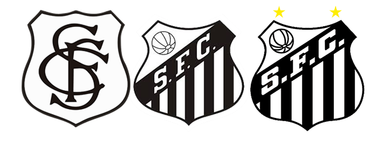
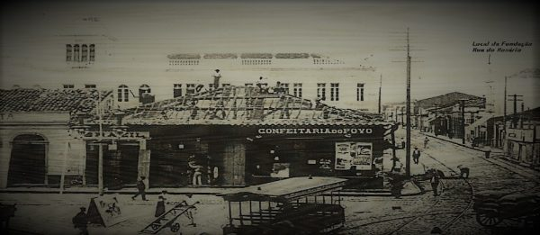
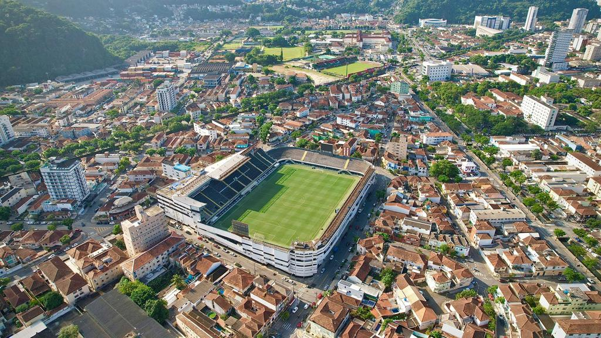
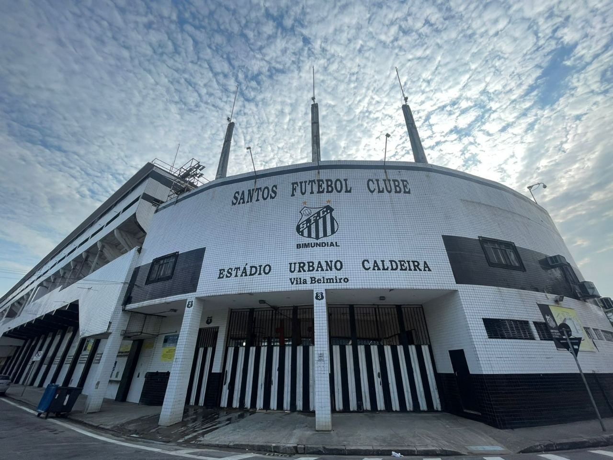
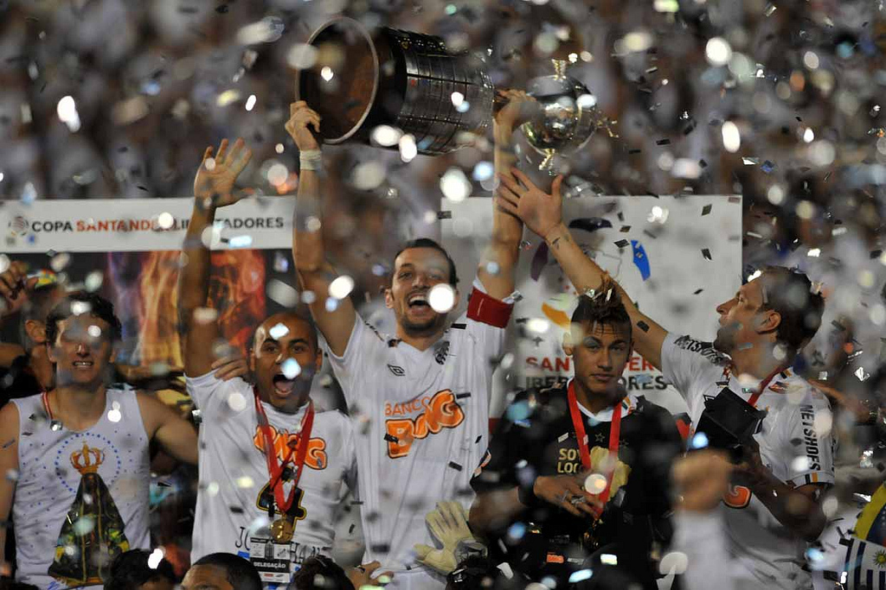
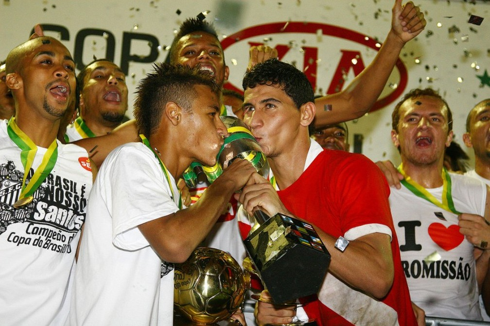

O Santos Futebol Clube foi fundado em 14 de abril de 1912, na cidade de Santos, litoral de São Paulo, por iniciativa de três esportistas locais: Raimundo Marques, Mário Ferraz de Campos e Argemiro de Souza Júnior. Com o passar dos anos, o clube se tornou um dos maiores e mais respeitados do Brasil e do mundo.
O Santos ganhou fama internacional especialmente nas décadas de 1950 e 1960, quando revelou ao mundo o maior jogador da história do futebol: Pelé. Com ele, o clube viveu sua era de ouro, conquistando inúmeros títulos, entre eles:
Além de Pelé, o clube revelou outros grandes craques como Neymar, Robinho, Diego, Rodrygo e muitos outros, consolidando sua fama de "Celeiro de Craques".
O Santos também se destaca por ser o único time brasileiro a ter marcado mais de 12 mil gols, sendo conhecido pelo seu estilo ofensivo e por formar talentos nas categorias de base.
O estádio do clube é a famosa Vila Belmiro, oficialmente chamada de Estádio Urbano Caldeira, onde o Santos manda seus jogos desde 1916.
Mesmo após a era Pelé, o clube continuou a conquistar títulos importantes, como a Libertadores de 2011 com Neymar, e sempre teve grande participação nos campeonatos nacionais e internacionais.

O Estádio Urbano Caldeira, popularmente conhecido como Vila Belmiro, é o palco histórico do Santos Futebol Clube. Localizado no bairro da Vila Belmiro, em Santos (SP), o estádio foi inaugurado em 12 de outubro de 1916 e carrega mais de um século de tradição.
Seu nome homenageia Urbano Caldeira, uma figura marcante na história do clube, que atuou como jogador, técnico e dirigente, dedicando grande parte de sua vida ao Santos.

Apesar de sua capacidade modesta de cerca de 16 mil torcedores, a Vila Belmiro é considerada um dos templos do futebol brasileiro. Foi nesse gramado que Pelé encantou o mundo, e onde gerações de craques brilharam com a camisa alvinegra.
A proximidade entre o campo e as arquibancadas cria uma atmosfera única, fazendo da Vila um símbolo de tradição, identidade e paixão santista. Mais do que um estádio, é um verdadeiro santuário para os torcedores do Peixe.


